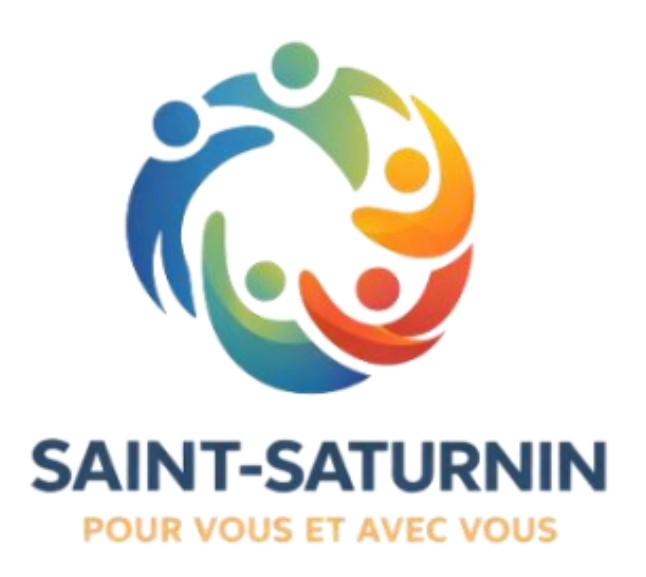

Chères Saint-Sanyennes, chers Saint-Sanyens,
Un immense MERCI à toutes et à tous, pour votre mobilisation, votre confiance et pour avoir fait entendre votre voix.
Avec 62 % des suffrages et 19 sièges sur 23, vous nous avez confié une mission claire que nous accueillons avec une immense gratitude, de l’humilité et une détermination sans faille.
L’élection est passée, place désormais à l’unité. Notre priorité absolue est de faire de ce nouveau conseil municipal un lieu de travail apaisé, respectueux et constructif. Nous voulons rassembler l’ensemble des habitants et des élus, au-delà des débats de campagne, pour bâtir des ponts et œuvrer dans l’intérêt supérieur de Saint-Saturnin. Notre porte restera grande ouverte à tous, car nous sommes convaincus que le bien-être collectif ne se construit qu’à plusieurs.
Comme nous l’avions promis, notre raison d’être reste inchangée : « Agir pour le bien-être collectif et l’avenir de Saint-Saturnin ».
Prochaine date : Samedi 30 mai, à la mairie
Ce sera l’occasion idéale pour se rencontrer (si ce n’est déjà fait), partager nos idées et recueillir vos suggestions pour les mois à venir.
À vos agendas !
Encore merci pour votre confiance. Nous sommes impatients de nous mettre au service de tous, pour que chacun se sente représenté.